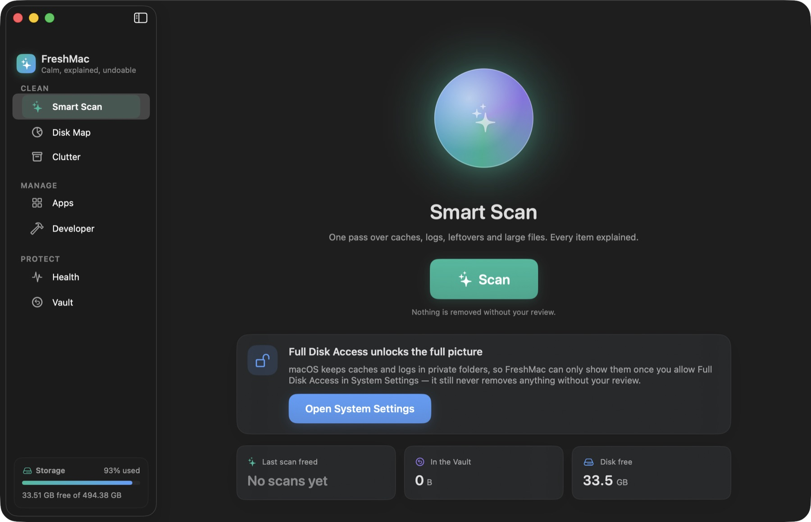
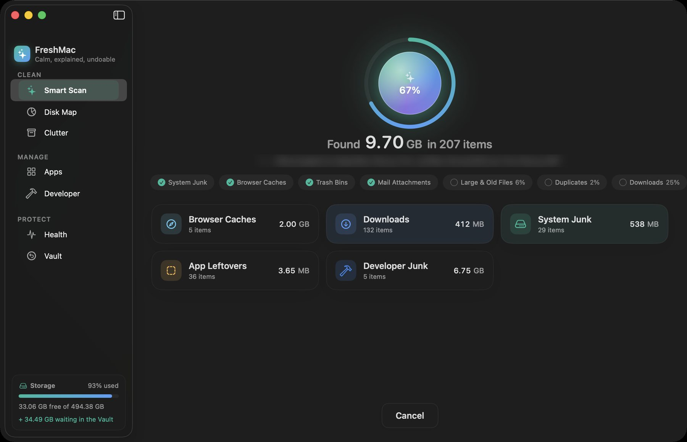
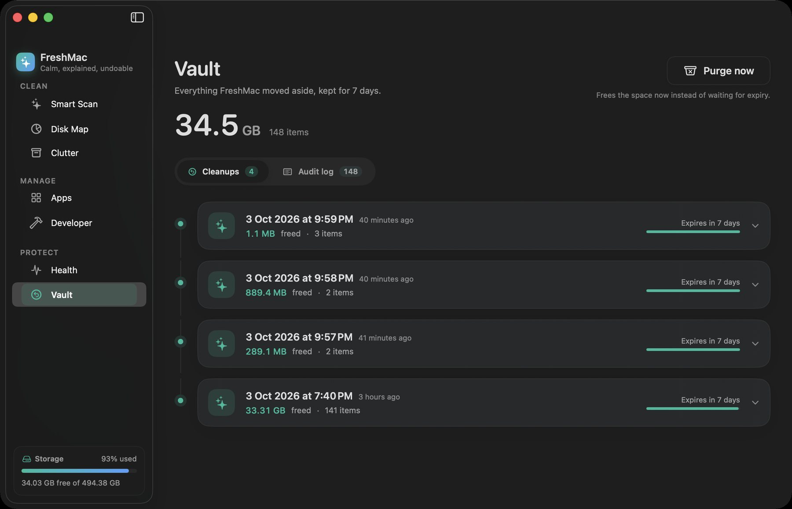
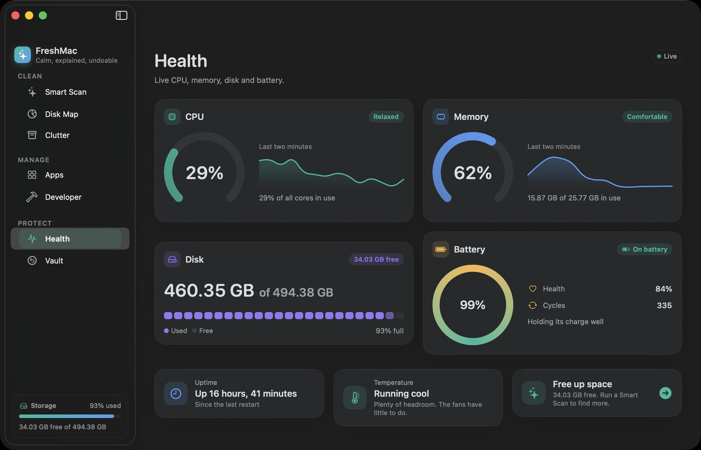
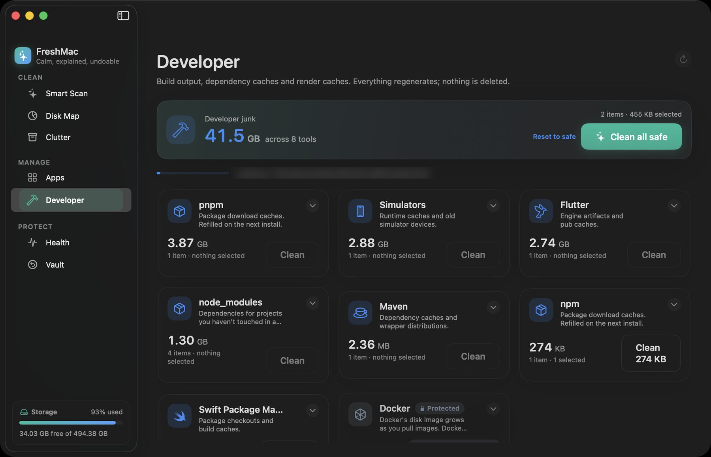
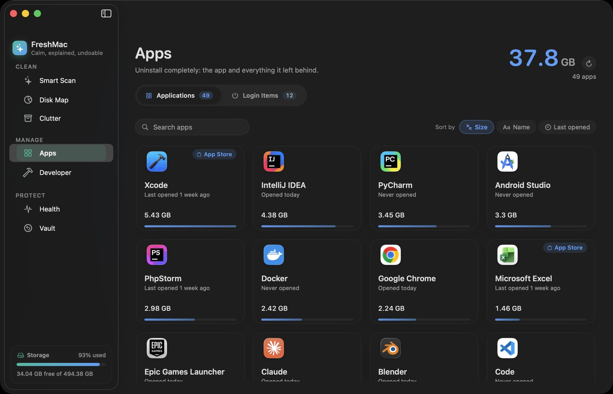

The Mac cleaner you don't have to trust blindly.
FreshMac explains every file before it moves, and every cleanup can be undone for 7 days. Get your space back without wondering what just disappeared.
-
DerivedDataBuild products Xcode rebuilds on your next build.~/Library/Developer/Xcode/DerivedData18.4 GBSafe
-
Spotify cacheOffline audio cache. Songs buffer briefly the next time you play them.~/Library/Caches/com.spotify.client2.1 GBSafe
-
old-site/node_modulesDependencies for a project untouched for 9 months. npm install brings them back.~/Projects/old-site/node_modules1.3 GBSafe
-
Final Cut Backups 2023Your own files, last opened 14 months ago. Check before removing.~/Movies/Final Cut Backups 20237.8 GBReview
-
Kontakt librariesSample libraries for Native Instruments. Shown for awareness, never removed.~/Library/Application Support/Native Instruments24 GBProtected
Safe items are pre-selected. Your own files wait for you.
Scan, read, clean. Change your mind any time.
Smart Scan looks at caches, logs, leftovers, large files and developer junk in one pass. Results arrive as they are found, sorted by what they are and who made them.




Every file explained
Each item says what it is, why it is safe, and what happens after. "Safari's web page cache. Safari rebuilds it as you browse."
Review first
Safe items are pre-selected. Anything that looks like your own data waits for you. Apps you rely on, like Photos, iCloud and Kontakt, are protected.
Undo always
Nothing is deleted outright. Cleanups go to the Vault, where you can restore one file or a whole run for 7 days. An audit log records every move.
The gigabytes other cleaners don't look for.
On a modern Mac the space usually hides in build caches, simulators and package stores. FreshMac knows these tools by name and treats each one the way you would.
Stale node_modules are judged by when you last worked on the project. Archives you need to read crash reports are marked for review. Docker images and sample libraries are shown so you know their size, and never touched.
- ~/Library/Developer/Xcode/DerivedDataRebuilt on your next buildSafe
- ~/Library/Developer/CoreSimulator/CachesSimulator runtime cachesSafe
- ~/Library/Caches/HomebrewBottles you already installedSafe
- ~/.npm/_cacachenpm downloads it again when neededSafe
- ~/Library/pnpm/storeHard-linked into your projectsReview
- ~/Library/Developer/Xcode/ArchivesNeeded to symbolicate shipped buildsReview
- ~/Library/Containers/com.docker.dockerImages and volumes. Use docker system pruneProtected

More care, less cost.
CleanMyMac and CCleaner are capable apps. FreshMac costs less, covers more Macs, and is built around one promise: you can always take a cleanup back.

| FreshMac Pro | CleanMyMac Plus | CCleaner Pro for Mac | |
|---|---|---|---|
| Yearly price | $24.99, 3 Macs | $71.40 | $44.95 |
| Lifetime price | $59 | $195.95 | Yearly plans only |
| Lifetime includes future major versions | Yes | Current major version only | Yearly plans only |
| Uninstaller removes leftover files | Yes | Yes | No |
Competitor figures come from their published plans in 2026: list prices in US dollars, before promotions. The uninstaller row reflects published reviews of each app.
Scan free. Pay once if you like it.
Free
- Smart Scan with every explanation
- Disk Map and Health monitor
- Complete uninstaller
- Developer cleanup up to 2 GB a month
Pro yearly
- Everything, unlimited
- Up to 3 Macs
- Vault with undo and audit log
Pro lifetime
- Everything in Pro
- Every future major version
- Up to 3 Macs
FreshMac never reports what it finds on your Mac.
Open the app and scan. There is nothing to sign up for.
Scans, cleanups and the Vault all stay on your Mac.
Before you clean
Why does FreshMac ask for Full Disk Access?
macOS keeps many caches and logs in private folders. Without Full Disk Access, FreshMac skips them and tells you which locations it could not check. It works without the permission, it just sees less.
Does FreshMac delete my files?
Not right away. A cleanup moves items into the Vault, inside your user Library. They stay restorable for 7 days by default, or up to 30 if you choose. Only then are they removed for good.
What can never be removed?
Keychains, Mail, Messages, iPhone backups, Photos and iCloud libraries, and the data of protected apps such as Native Instruments and Docker. You can add your own apps to the protected list in Settings.
Which Macs does it run on?
Any Mac with macOS 15 Sequoia or later, on Apple silicon or Intel.
Is there a "speed up your Mac" button?
No. FreshMac frees disk space and shows you what your Mac is doing. It doesn't promise speed it can't measure.
FreshMac 0.1 beta
The public download opens with the first signed release. FreshMac needs macOS 15 Sequoia or later.
Back to top